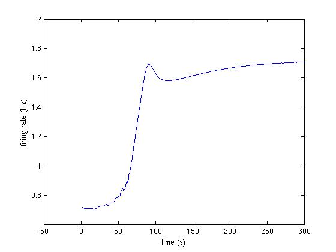
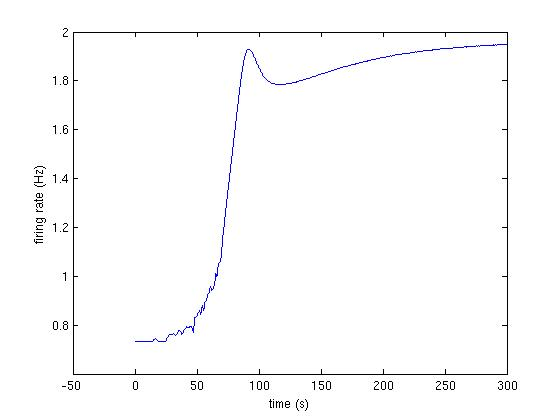
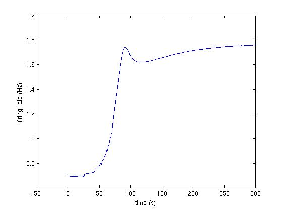

This is the README for the model associated with the paper:
Anderson WD, Makadia HK, Vadigepalli R (2015) Molecular variability
elicits a tunable switch with discrete neuromodulatory response
phenotypes. J Comput Neurosci
Abstract: Recent single cell studies show extensive molecular
variability underlying cellular responses. We evaluated the impact of
molecular variability in the expression of cell signaling components
and ion channels on electrophysiological excitability and
neuromodulation. We employed a computational approach that integrated
neuropeptide receptor-mediated signaling with electrophysiology. We
simulated a population of neurons in which expression levels of a
neuropeptide receptor and multiple ion channels were simultaneously
varied within a physiological range. We analyzed the effects of
variation on the electrophysiological response to a neuropeptide
stimulus. Our results revealed distinct response patterns associated
with low versus high receptor levels. Neurons with low receptor levels
showed increased excitability and neurons with high receptor levels
showed reduced excitability. These response patterns were separated by
a narrow receptor level range forming a separatrix. The position of
this separatrix was dependent on the expression levels of multiple ion
channels. To assess the relative contributions of receptor and ion
channel levels to the response profiles, we categorized the responses
into six phenotypes based on response kinetics and magnitude. We
applied several multivariate statistical approaches and found that
receptor and channel expression levels influence the neuromodulation
response phenotype through a complex though systematic mapping. Our
analyses extended our understanding of how cellular responses to
neuromodulation vary as a function of molecular expression. Our study
showed that receptor expression and biophysical state interact with
distinct relative contributions to neuronal excitability.
The "actual model" (representation of the properties of the original
biological system) is identical to what was used in Makadia, H.K.,
Anderson, W.D., Fey, D., Sauter, T., Schwaber, J.S., and Vadigepalli,
R. (2015). Multiscale model of dynamic neuromodulation integrating
neuropeptide-induced signaling pathway activity with membrane
electrophysiology. Biophys. J. 108, 211-223 (code available at ModelDB
entry 156830). However, the current entry contains code to implement
parameter variations key to our recent analysis (Anderson WD, Makadia
HK, Vadigepalli R (2015) Molecular variability elicits a tunable
switch with discrete neuromodulatory response phenotypes. J Comput
Neurosci).
Queries can be directed to:
Rajanikanth.Vadigepalli@jefferson.edu
warren.anderson@jefferson.edu
hiren.makadia@gmail.com
List of the files in the folder
Fig3A_1.jpg : First trace from Fig 3A (fig below and code at bottom)

Fig3A_2.jpg : Second trace from Fig 3A (fig below and code at bottom)

Fig3A_3.jpg : Third trace from Fig 3A (fig below and code at bottom)

LoadInitialConditions.m : Initial conditions for all 194 species
:(see specieslist.xls for details)
LoadParameterswky.m : list of parameters (see signaling_network-parameterlist.xls)
odemodel.m : function to integrate the ODE model
README.txt : this file
referenceSimulation.jpg : results of runing the reference phenotyype of the model
: (see code below)
runModel.m : function to integrate the model and plot frequency
signaling_network-parameterlist.xls : Excel file for list of all the parameters and their units
specieslist.xls : Excel file for list of species and their initial values
Instruction to run key simulations:
The following command in MATLAB will implement the model:
>> [firing_rate] = runModel([1,1,1,1,1,1]);
The input the the function runModel() is a vector of weights to the following molecular species:
AT1R, gNa, gKdr, gKa, gKahp, gCaL
The following code produces the traces shown in Fig 3A:
>> [firing_rate] = runModel([1, 1, 1, 1, 1.05, 0.95]);
>> [firing_rate] = runModel([1, 1, 1.1, 1, 1, 0.9]);
>> [firing_rate] = runModel([1 ,0.92, 1, 1.05, 1, 1]);
It takes about 15 minutes to generate one of these traces on a 2012 macbook pro laptop.